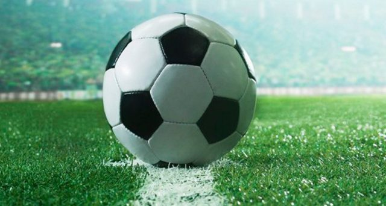
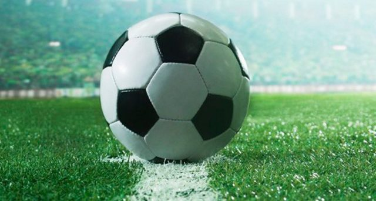

La formula 1 e il calcio
sono le mie passioni.
Le mie passioni, fin da bambino sono la formla 1 e il calcio, due sport ricchi di competizione dove tutti vogliono vincere. I miei hobby sono per me molto importanti perchè spesso mi capita di annoiarmi e, in particolare la domenica la passo ad assistere ad alcune partite di calcio e a guardare la formula 1, senza trascurare di dover studiare per il giorno seguente. Sono un tifoso della scuderia ferrari e cerco sempre di sostenere il team nonostante non possa viaggiare per il mondo a vedere le gare.
 
